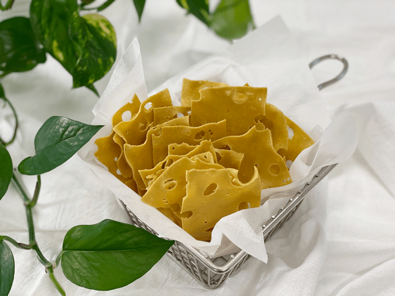
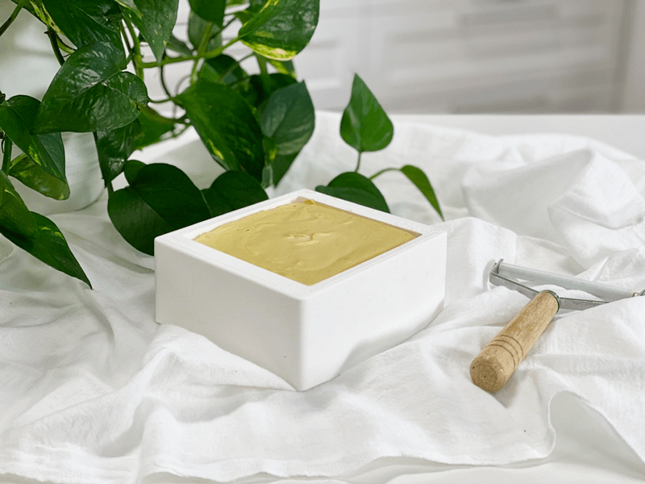
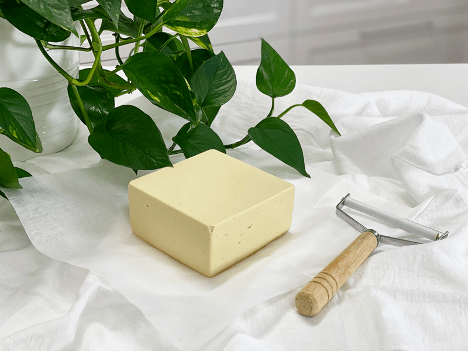
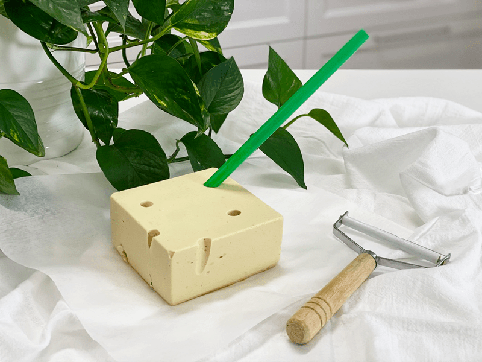
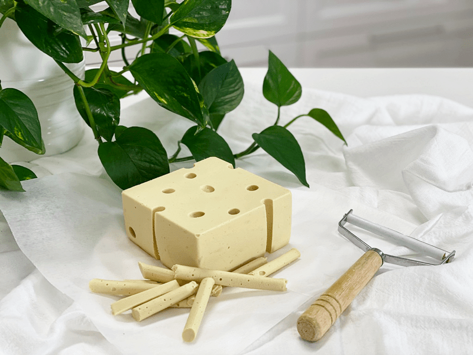
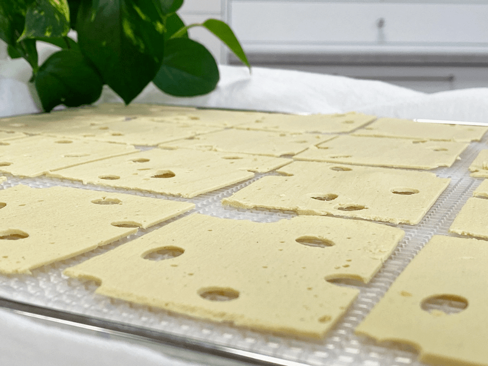
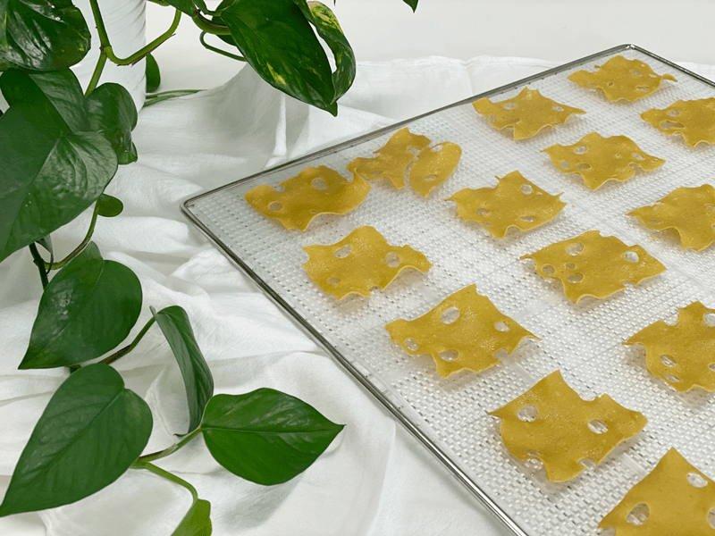
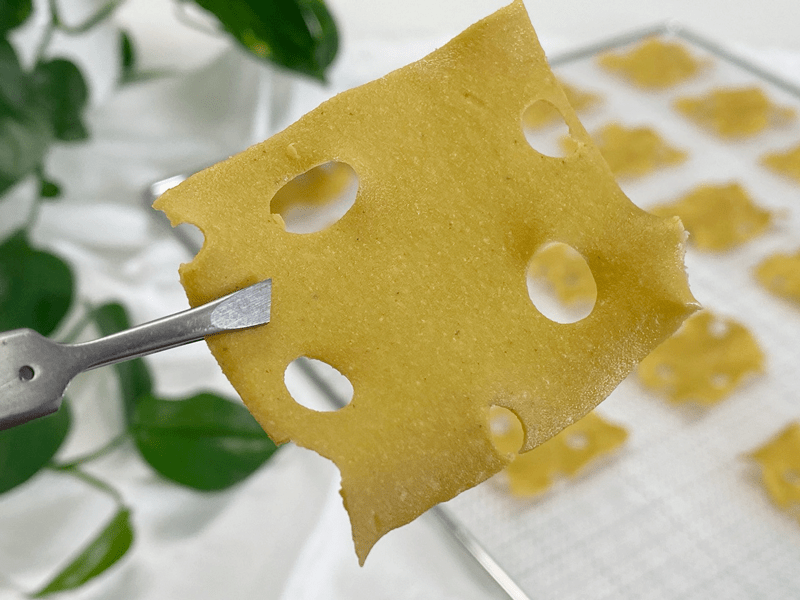

Swiss Cheese Crisps | Oil-Free
Swiss Cheese Crisps. Right from the get-go, the name alone makes one’s cheeks start to squirt. They give you a feel-good, guilt-free, real food snacking experience. Eat them as is or toss them on a salad or appetizer plate for flavor and crunch!

I know that the Swiss take their cheese seriously. In fact, Switzerland produces about 180,000 tons of cheese a year and export about a third of all they produce. So I hope I don’t offend any of you when calling this recipe “Swiss Cheese.” We, raw vegans, love to get creative when it comes to replacing animal-based products.
Key Technique
To achieve crispy, snappy, crisps, you need to create really thin slices. I have tried doing this the ole’ fashion way; steady hand and knife, but quickly found that I am not a master cheese slicer. My slices were uneven, which affects the dehydration process. When making these crisps or any other “cheese” chip on my site, I always use my mandolin. Click (here) to see one that is similar but not exactly the same one. Mine is old, and I can’t find any trademarks on it.
Key Ingredient
Next, there is the key ingredient that we don’t want to substitute, and that is the agar powder. It is not a raw product as it requires heat to dissolve, which kicks in the magical power of thickening and adding structure to the “cheese.” Without it, you would end up a dip or spread which, hey, nothing wrong with that if you don’t want to make the crisps.
As a side note, agar is known to aid in digestion, as well as carrying out toxic waste from the body. It can also help to reduce inflammation, calm the liver, and bring relief to the lungs. Pretty interesting stuff. And here I thought it was just some odd thickener that you only read about, but never had in the kitchen pantry. You can read more about it (here).
Well, you know what time it is! Dirty dish making time! Let’s get busy in the kitchen and whip up some delicious Swiss Cheese Crisps! Blessings, amie sue
 Ingredients:
Ingredients:
yields 4″x4″x2″ brick
- 1/2 cup (110 g) water
- 1/2 cup (75 g) cashews, soaked 2+ hours
- 1/4 cup (30 g) nutritional yeast
- 3 Tbsp (40 g) lemon juice
- 2 Tbsp (43 g) tahini
- 2 tsp (14 g) Dijon mustard
- 1/4 tsp (2 g) Himalayan pink salt
- 1/2 tsp (2 g) garlic powder
- 1 Tbsp (9 g) dried onion flakes
- 1/4 tsp (<1 g) ground dill weed
- 1 cup (226 g) water
- 1 1/2 Tbsp (11 g) agar powder or 5 Tbsp agar flakes
Preparation:
- Set aside a 3 cup container, or the mold of your choice to use as the mold for the cheese.
- In a high powered blender add, water, cashews, nutritional yeast, lemon juice, tahini, mustard, salt, garlic, onion flakes, garlic powder, and dill. Blend until the mix is completely smooth.
- Stop occasionally to test for grittiness.
- It can take 1-3 minutes, depending on the blender.
- In a small saucepan, whisk together the water and agar.
- Let it sit for a few minutes.
- Bring to a boil for about one minute, stirring constantly.
- Reduce the heat and simmer for about 5 minutes, constantly stirring until the agar is fully dissolved.
- Start the blender creating a vortex, CAREFULLY add the agar gel and blend just long enough to incorporate everything together. Don’t over-process. The batter will start to thicken.
- Be careful that the liquid doesn’t splatter, hitting your skin.
- What is a vortex? Look into the container from the top and slowly increase the speed from low to high, the batter will form a small vortex (or hole) in the center. High-powered machines have containers that are designed to create a controlled vortex, systematically folding ingredients back to the blades for smoother blends and faster processing… instead of just spinning ingredients around, hoping they find their way to the blades.
- If your machine isn’t powerful enough or built to do this, you may need to stop the unit often to scrape the sides down.
- Pour the mixture into the mold of choice and chill until firm (roughly 1-2 hours).
- Once firm, using a mandolin, create thin slices and place them on the mesh sheet that comes with the dehydrator.
- Sprinkle Himalayan pink salt on top.
- Dehydrate at 115 degrees (F) for 6-10 hours or until crispy.
- Store in an airtight container on the counter for 5-7 days (?)… they get eaten so quickly that I am really not too sure.
-

-
The mold I used was 4″x4″x2″
-

-
Once the cheese is firm, pop it out of the mold.
-

-
You can enjoy it as is or have fun with making Swiss cheese holes.
-

-
By pinching the straw, cheese tubes will pop out. Dice them up and toss into a salad.
-

-
Lay each cheese slice on the mesh sheet that comes with the dehydrator.
-

-
As you can see, they darken as they dry.
-

-
What more can I say? Cheesy, crunchy, and salty. Yum!
© AmieSue.com